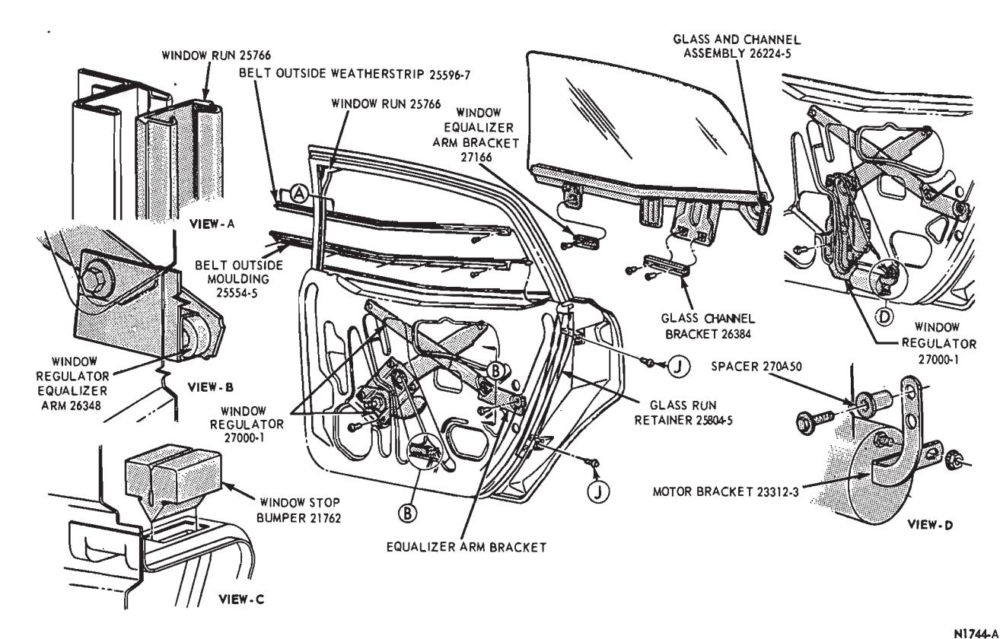
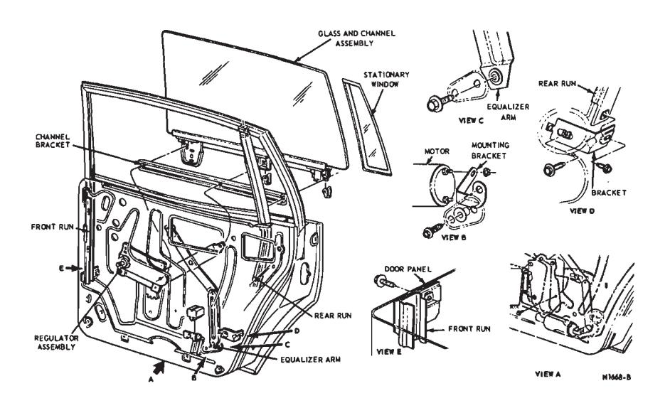
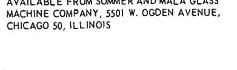
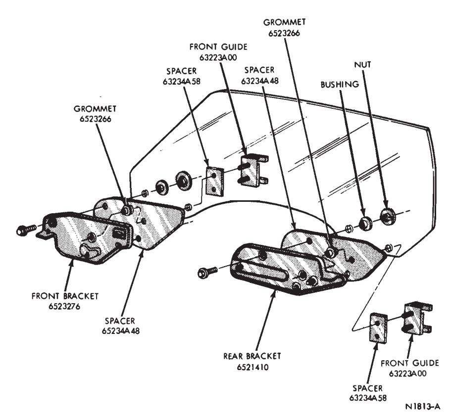
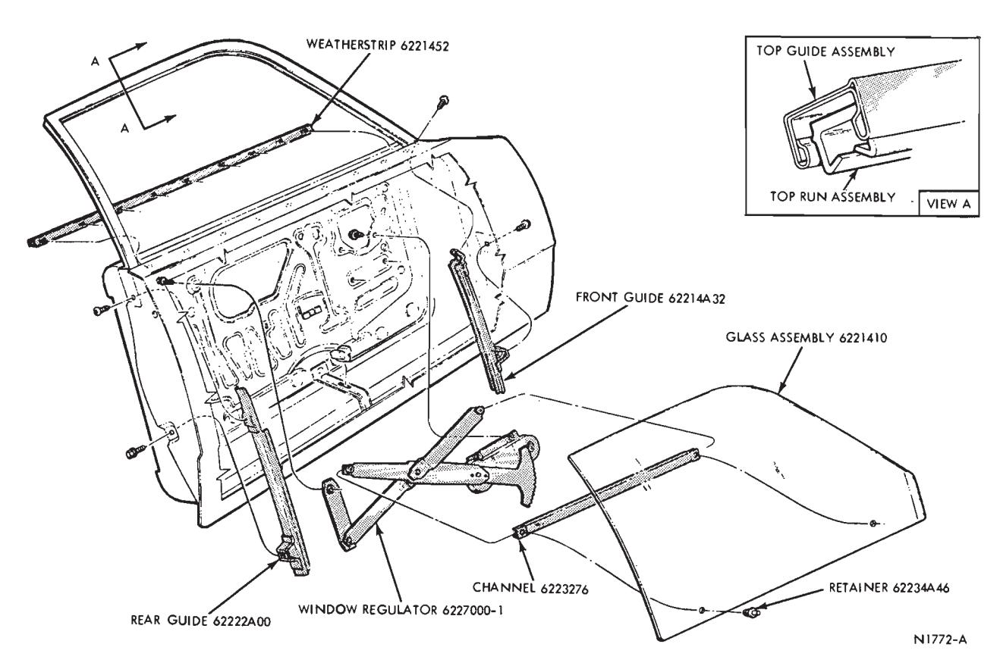
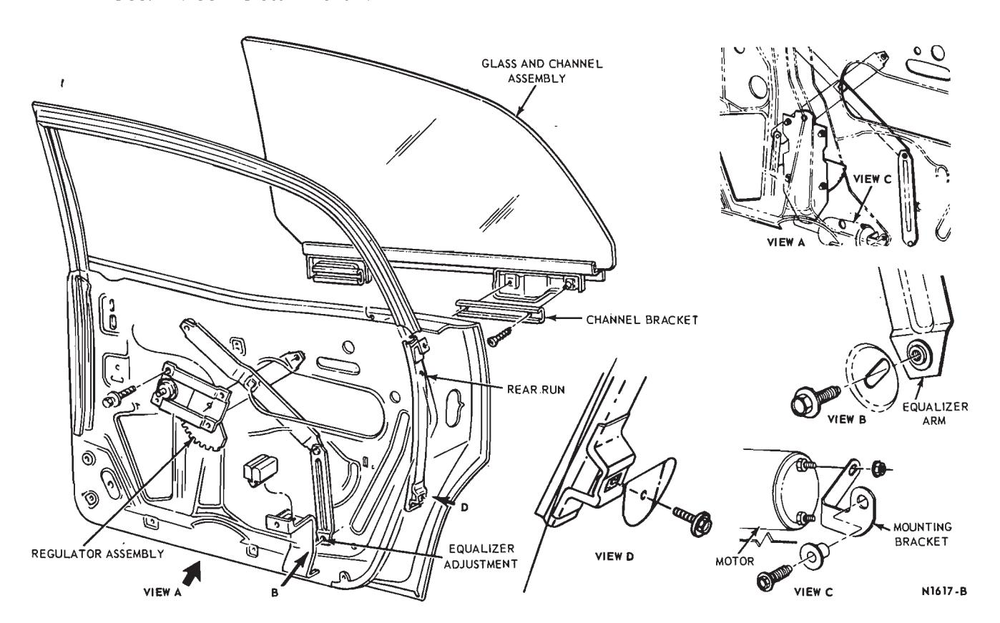
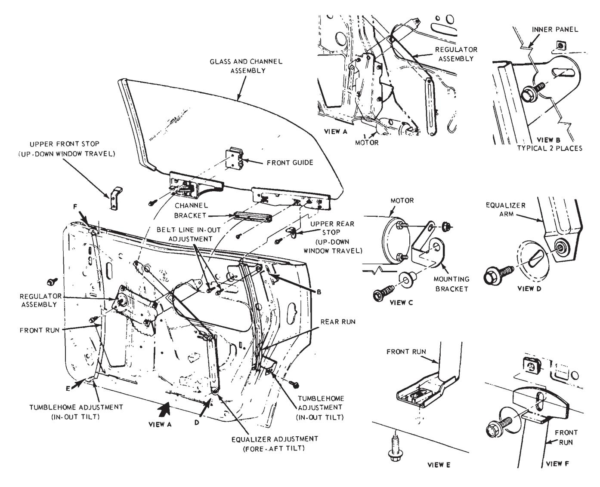
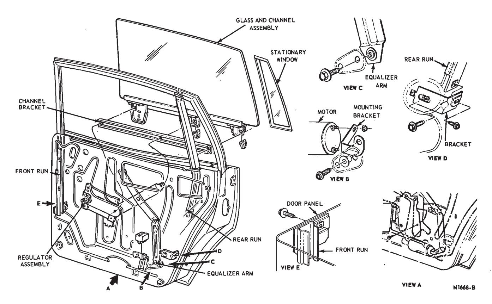

Front and Rear Door Glass · 42-02-17
Front Door Window Glass — Falcon Models 54 and 71
Removal
- Remove the trim panel and watershield from the door.
- Remove the lower stop from the door (Fig. 7).
- Remove the vent window division bar lower adjusting screw and nut (Fig. 7).
- Lower the glass and remove the front run and retainer from the vent window division bar.
- Rotate the glass and channel assembly 90 degrees and remove the glass and channel assembly from the door.
- Remove the glass channel from the glass with the tool shown in Fig. 17.
Installation
- Install the glass in the glass channel with the tool shown in Fig.
- Lubricate the window mechanism as outlined in Section 1.
- Position the glass and channel assembly in the door and insert the regulator arm roller in the glass channel bracket (Fig. 10).
- Install the front run and retainer in the vent window division bar and insert the glass in the glass runs.
- Install the vent window division bar lower adjusting screw and nut.
- Install the lower stop and adjust the door window glass mechanism.
- Install the watershield and trim panel on the door.
Front Door Window Glass — Falcon Model 62
Removal
- Remove the trim, panel and position the watershield away from the access holes.
- After removing the stop (Fig. 9), lower the glass until the regulator arm roller is out of the glass channel.
- Unsnap and remove the belt weatherstrips, loosen the front run attaching bolt at the mounting bracket, and remove the bracket attaching bolt from the inner panel.
- Remove the front run from the division bar by pulling rearward on the edges of the run.
- Remove the glass.
Installation
- Using the tool shown in Fig. 17, remove the channel from the glass.
- Install the channel, using new glass tape.
- Simultaneously, position the glass and run in the door, and install the belt weatherstrips.
- Position the regulator arm roller in the channel, and finally position the run in the division bar.
- Connect the run and bracket, making necessary lateral adjustment.
- Install the stop, making necessary adjustment.
- Carefully position the watershield, the inner panel, and install the trim panel.
Front Door Window Glass — Montego and Fairlane — Models 54 and 71
Removal
-
Remove the trim panel and

Fig. 15 — Rear Door Window Glass Mechanism — Ford, Mercury and Meteor Models 54 and 71GLASS AND CHANNEL REMOVAL TOOL (NO. 2900) AVAILABLE FROM SOMMER AND MALA GLASS MACHINE COMPANY, 5501 W. OGDEN AVENUE, ershield from the door.

Fig. 16 — Rear Door Window Adjustment — Fairlane and Montego Model -
Remove the rubber bumper from the lower stop.
-
Lower the window and unsnap the inside belt weatherstrip from the
-
Remove the vent window division bar lower adjusting screw and nut (Figs. 7 and 8).

Fig. 17 — Glass Channel Replacement -
Pull the front run and retainer from the vent window division bar.
-
Rotate the glass and channel assembly 90 degrees and remove the glass and channel assembly from the
-
Remove the glass channel from the glass with the tool shown in Fig. 17.
Installation
- Install the glass in the glass channel with the tool shown in Fig. 17
- Lubricate the window mechanism as outlined in Part 42-01.
- Position the glass and channel assembly in the door and insert the regulator arm roller in the glass channel bracket (Figs. 7 and 8).
- Install the belt weatherstrip in the door
- Install the front run and retainer in the vent window division bar and insert the window glass in the glass runs.
- Install the vent window division bar lower adjusting screw and nut.
- Install the rubber bumper in the lower stop and adjust the door window glass mechanism.
- Install the watershield and trim panel on the door.
Front Door Window Glass — Power Windows — Montego and Fairlane — Model 71
Removal
- Remove the trim panel and watershield from the door.
- Remove two screws attaching the regulator arm roller bracket to the door inner panel and remove the bracket.
- Disconnect the motor wires at the connector.
- Remove the motor bracket-to-door inner panel attaching screw (Figs. 7 and 8).
- Remove the glass lower stop from the door.
- Remove the nut and washer from the vent window division bar lower adjusting screw.
- Remove four screws attaching the window regulator to the door inner panel. Support the glass and channel assembly and lay the regulator in the bottom of the door panel.
- Remove the front run and retainer from the vent window division bar.
- Remove three screws retaining the vent window assembly in the door and remove the vent window assembly from the door.
- Remove the glass and channel assembly from the door.
- Remove the glass from the channel with the tool shown in Fig. 17.
Installation
- Install the glass in the glass channel with the tool shown in Fig. 17.
- Lubricate the window mechanism as shown in Part 42-01.
- Position the glass and channel assembly in the door.
- Position the vent window assembly to the door and install the three retaining screws (Figs. 7 and 8).
- Position the front run and retainer into the door. Then, place the glass in the front and rear runs and insert the front run into the vent window division bar.
- Support the glass and insert the regulator arm rollers into the glass channel bracket.
- Position the window regulator to the door inner panel and install the four attaching screws.
- Insert the regulator arm roller in the regulator arm roller bracket. Position the roller bracket to the door inner panel and install the two attaching screws.
- Install the washer and nut on the vent window division bar lower adjusting screw (Figs. 7 and 8).
- Install the motor bracket-to-door inner panel attaching screw (Figs. 7 and 8) and connect the motor wires.
- Install the window glass lower stop, and adjust the door window glass.
- Install the watershield and trim panel on the door. Then, clean the glass and surrounding area.
Front Door Window Glass — Fairlane and Montego — Model 57
Removal
- Remove the trim panel and weathersheet.
- Remove the belt line dust seal at the rear of the door.
- Remove the outside belt weatherstrip.
- Remove the front and rear screws attaching the glass and bracket assembly to the channel bracket (Fig. 4)
- Slide the glass and bracket assembly out of the door through the rear notch. Remove the glass and bracket assembly to a bench.
- Remove the nuts, bolts and bushings from the glass and bracket assembly.
- Remove the brackets from the glass. Remove and discard the rubber spacers from the brackets.
Installation
- Position new rubber spacers on the glass. Position the brackets on the glass and install the bolts, bushings and nuts. Torque the bolts to 40-90 in-lbs. Be sure that the spacers are properly positioned flat against the glass. Wrinkled or crimped spacers can cause cracked windows.
- Slide the glass assembly into position through the notch in the rear of the door.
- Position the channel bracket to the glass assembly and install the front and rear glass bracket-to-channel bracket attaching screws.
- Install the outside belt weatherstrip.
- Install the dust seal at the rear notch of the door.
- Adjust the window as required.
- Install the weathersheet and trim panel.
Fairlane and Montego — Model 54
Removal
- Remove the door trim panel and peel back the watershield.
- Remove both rear run retainers located at the mid point of the door and at the bottom of the run.
- Lower the window one third of the way down.
- Remove the screws retaining the glass channel bracket (Fig. 8) to the glass channel and lower the window down in the door.
- Remove the belt line weatherstrip.
- Move the window down in the door, tilt it nearly 90 degrees forward and remove it up and out of the window opening while tilting it slightly inward.
Installation
- Position the glass assembly in the door.
- Install the belt line weatherstrip.
- Position the glass channel bracket to the glass channel and install the retaining screws.
- Install the rear run retainers.
- Install the window lower stop bumper.
- Install the watershield and door trim panel.
Front Door Window Glass — Ford, Mercury and Meteor Models 54, 62 and 71
Removal
-
Remove the door trim panel and peel back the watershield.

Fig. 18 — Front Door Glass — Bolt-On Type — Fairlane and Montego -
Remove the rear run retainer.
-
Lower the window one third of the way down
-
Remove the screws retaining the glass channel bracket (Fig. 10) to the glass channel and lower the window down in the door.
-
Remove the belt line weatherstrip.
-
Move the window down in the door, tilt it nearly 90 degrees forward and remove it up and out of the window opening while tilting it slightly inward.
-
Remove the glass channel from the glass using a removal tool such as shown in Fig. 17.
Installation
- Install the glass channel on the glass using a tool such as shown in Fig. 17.
- Position the glass assembly in the door.
- Install the belt line weatherstrip.
- Position the glass channel bracket to the glass channel and install the retaining screws.
- Install the rear run retainer.
- Install the window lower stop bumper.
- Install the watershield and door trim panel.
Front Door Window Ventless Glass — Fairlane and Montego — Models 63, 65, 66 and 76
Removal
- Remove the trim panel and watershield from the door.
- Remove the upper front stop bracket with the stop attached from the door (Fig. 4).
- Remove the upper rear stop from the door (Fig. 4).
- Remove two nuts attaching each guide to the glass and channel assembly and remove the front and rear guide.
- Remove two screws attaching the glass channel bracket to the glass channel (Fig. 4).
- Remove the nut retaining the window regulator arm to the glass channel at the pivot (Fig. 4) and remove the pivot.
- Remove five screws attaching the weatherstrip to the rear top edge of the door and two screws attaching the weatherstrip to the top front edge of the door. Position the weatherstrip ends away from the door.
- Remove the glass and bracket assembly from the door. A recess is provided at the front and rear edge of the glass opening to provide clearance for the stop tabs when removing the glass and bracket assembly. To remove the glass, lift the glass straight up, allowing the tabs on the bracket to pass through the recess provided at the front and rear of the glass opening.
- Place the glass and bracket assembly on a bench and remove the nuts, bolts and neoprene bushings from the glass and bracket (Fig. 18). Remove the brackets from the glass and remove the rubber spacers from the brackets and discard the spacers. Also, remove and discard the spacers from the window guides.
Installation
- Position new spacers on the glass and place the brackets over the gasket. Be sure the spacers lie flat against the glass. Wrinkled or crimped spacers can cause window cracking.
- Install the neoprene bushings, bolts and nuts to attach the glass to the brackets. Torque the bolts to 40-90 in-lbs. Be sure that there is no dirt or broken glass in the bracket bolt hole indentations. Particles of dirt or glass can cause uneven torque which can result in cracked glass.
- Insert the glass and bracket assembly into the door.
- Lubricate the window mechanism as shown in Part 42-01.
- Position the window regulator arm to the glass bracket and install the pivot and retaining nut (Fig. 4).
- Position the glass channel bracket to the regulator arm roller and the glass channel. Install the two glass channel bracket attaching screws.
- Install new spacers on the front and rear guides. Position the front and rear guides to the glass brackets and install the attaching nuts (Fig. 4). Torque the nuts to 40-90 in-lbs.
- Install the upper front stop bracket and the upper rear stop (Fig. 4).
- Adjust the window mechanism.
- Install the watershield and trim panel on the door.
Front Door Window Ventless Glass — Lincoln Continental, Ford, Mercury, Meteor, Mustang and Cougar
Removal
- Remove the door trim panel and watershield.
- Remove the front and rear guides from the glass bracket (Figs. 2 and 3).
- Remove the front stop and bracket (Figs. 2 and 3).
- Remove the rear stop from the door.
- Disconnect the window regulator arm from the glass channel or bracket at the pivot (Figs. 2 and 3).
- Remove the drive arm bracket from the glass channel or bracket (Figs. 2 and 3).
- Remove the belt weatherstrip(s) from the door.
- Remove the glass and channel or bracket assembly.
- If equipped with bolt-on glass, place the glass and bracket assembly on a bench and remove the nuts, bolts and neoprene bushings from the glass and bracket. Remove the brackets from the glass and remove the rubber spacers from the brackets and discard the spacers. Also, remove and discard the spacers from the window guides.
Installation
- If equipped with bolt-on glass, position new spacers on the glass and place the brackets over the gasket. Be sure the spacers lie flat against the glass. Wrinkled or crimped spacers can cause window cracking.
- Install the neoprene bushings, bolts and nuts to attach the glass to the brackets. Torque the bolts to 40-90 in-lbs. Be sure that there is no dirt or broken glass in the bracket bolt hole indentations. Particles of dirt or glass can cause uneven torque which can result in cracked glass.
- Position the glass and channel assembly in the door.
- If equipped with bolt-on glass, install new spacers on the guides. Slide the guides on the glass runs and attach the guides to the glass channel or bracket (Figs. 2 and 3). With bolt-on glass, torque the retaining nuts 40-90 in-lbs.
- Install the belt weatherstrip(s).
- Connect the window regulator arm to the glass channel at the pivot (Figs. 2 and 3).
- Place the drive arm bracket on the regulator arm roller and attach the bracket to the glass channel.
- Install and adjust the front and rear stops.
- Install the watershield and door trim panel.
Door Window Ventless Glass — Continental Mark III and Thunderbird
Removal
- Remove the trim panel and watershield from the door.
- Remove three screws attaching the lock pillar seal to the door at the belt line and remove the seal.
- Remove two screws attaching the lower stop to the door inner panel and remove the stop.
- Lower the glass and remove eight screws attaching the belt outside weatherstrip to the door, and remove the weatherstrip.
- Raise the glass about half way and support it in that position.
- Remove the nut from the regulator arm to glass channel pivot and remove the pivot (Figs. 5 and 6).
- Remove the upper front stop bracket from the glass channel.
- Remove two screws attaching the regulator arm drive bracket (Figs. 5 and 6) to the glass channel and remove the bracket.
- Remove the upper rear stop upper attaching screw and loosen the lower attaching screw.
- Remove two front guide attaching bolts and remove the front guide from the glass channel.
- Remove two rear guide attaching bolts and remove the rear guide from the glass channel.
- Remove the glass and channel assembly from the door.
Installation
- Position the glass in the door and install the belt outside weatherstrip.
- Raise the glass about half way and support it in that position.
- Position the front and rear guides to the glass channels and install the attaching bolts (Figs. 5 and 6).
- Position the regulator arm to the glass channel and install the nut (Fig. 6).
- Install the upper front stop bracket on the glass channel.
- Position the regulator arm drive bracket to the regulator arm roller and the glass channel and install the two attaching screws.
- Remove the glass support and install the glass lower stop. Adjust the lower stop to contact the lower edge of the glass when the top of the glass is flush with the belt line.
- Rotate the upper rear stop into position and install the one removed (upper) attaching screw. With the window in the up position, place the upper rear stop down against the glass channel and tighten the two screws K (Figs. 5 and 6). Be sure that the anti-rattle of the stop contacts the glass and channel assembly.
- With the window up, position the upper front stop down against the stop bracket and tighten the two screws securely.
- Position the lock pillar seal to the door and install the three attaching screws.
- With the window in the up position, move the glass and channel fore or aft as required for alignment with the body. Then, tighten the nut T (Figs. 5 and 6) securely.
- Position the front and rear runs inboard or outboard as required to properly position the glass to the belt outside weatherstrip. Then, tighten the run attaching screws and check the operation of the window. If high operating efforts are encountered, refer to step 1 of the Door Window Glass Adjustment.
- Install the watershield and door trim panel.
Front Door Window Glass — Maverick
Removal
- Remove the door trim panel and weathersheet from the door.
- Remove the bolts retaining the regulator assembly and lower the regulator assembly and glass assembly to the bottom of the door.
- Disconnect the regulator arms from the channel and remove the glass and channel from the door.
- Place the glass and channel on a bench and remove the nylon retainers (Fig. 19) which attach the glass to the channel and remove the glass.
- Position the glass to the channel and install the nylon retainers.
- Insert the glass and channel assembly into the door and connect the regulator arms rollers to the channel (Fig. 19).
- Raise the regulator and glass assembly into position and install the regulator retaining bolts.
- Adjust the window as required.
- Install the weathersheet and door trim panel.
Rear Door Window Glass — Ford, Mercury and Meteor — Models 54 and 71
Removal
- Remove the door trim panel and watershield.
- Remove the lower window stop.
- Remove the screws retaining the glass channel bracket to the glass channel.
- Tilt the forward edge of the glass assembly up and remove the glass assembly from the door.
- Using a tool such as shown in Fig. 17, remove the channel assembly from the glass.
Installation
- Apply the new glass tape to the lower edge of the glass.
- Install the glass into the channel, using a tool such as shown in Fig. 17.
- Position the glass and channel assembly into the door.
- Position the channel bracket to the glass channel and install the channel-bracket-to-channel retaining screws.
- Install and adjust the lower glass stop.
- Install the door watershield and trim panel.
Rear Door Window Glass — Lincoln Continental, Ford, Mercury and Meteor Models 53 and 57
Removal
- Remove the door trim panel and watershield.
- Remove the upper rear stop from the door (Fig. 12).
- Remove the nut and bushing from the regulator arm to glass channel pivot (Fig. 12).
- Remove the glass channel bracket from the glass channel.
- Remove the rear dust cover.
- Lower the glass and channel assembly and remove the belt outside weatherstrip.
- Remove the front and rear guides from the glass channel and remove the glass and channel assembly from the door.
Installation
- Lubricate the window mechanism as shown in Part 42-01.
- Position the glass in the door and to the front and rear guides. Install the front and rear guide attaching screws.
- Install the belt outside weatherstrip.
- Position the glass channel bracket to the glass channel and window regulator arm roller and install the two attaching screws (Fig. 12).
- Position the regulator arm to the glass channel pivot and install the bushing and retaining nut.
- Install the glass upper rear stop (Fig. 12) and replace the dust cover.
- Adjust the window mechanism.
- Install the watershield and trim panel on the door.
Rear Door Window Glass — Falcon Models 54 and 71
Removal
- Remove the door trim panel and watershield.
- Remove the two screws retaining the regulator roller channel bracket to the lower window channel (Fig. 11).
- Remove the lower stop assembly.
- Remove the screw and nut retaining the rear run retainer and stationary glass. Move the run retainer and glass back and down in the door.
- Remove the door belt, outside weatherstrip.
- Tilt the door window down and then lift it out of the door.
- Using a tool such as shown in Fig. 17, remove the glass from the lower channel.
Installation
- Position new glass tape on the glass and, using a tool such as shown in Fig. 17, install the lower channel on the glass.
- Position the glass and channel assembly in the door.
- Position the rear run retainer and stationary glass assembly and install the retainer screw and nut.
- Install the regulator roller channel bracket on the window channel.
- Install the lower window stop.
- Install the door trim watershield and the door trim panel.
- Install the window outside belt weatherstrip.
Rear Door Window Glass — Fairlane and Montego Model 54
Removal
- Remove the trim panel and watershield from the door.
- Support the glass and channel assembly. Remove three glass channel bracket attaching screws and separate the bracket from the glass channel.
- Remove two screws attaching the glass channel to the front and rear roller carriers (Fig. 20) and lower the glass to the bottom of the door.
- Remove the belt weatherstrips from the door.
- Remove the glass and channel assembly from the door.
Installation
- Lubricate the glass mechanism as shown in Part 42-01.
- Position the glass and channel assembly in the door.
- Install the belt weatherstrip in the door.
- Position the front and rear roller carriers to the glass channel and install the two attaching screws (Fig. 20)
- Position the glass channel bracket to the glass channel and install the three attaching screws.
- Check the operation of the window mechanism and install the watershield and trim panel on the door.
Rear Door Window Glass — Fairlane and Montego — Model 57
Removal
-
Remove the trim panel and weathersheet.
-
Remove the front and rear dust seal from the upper side of the door.
-
Remove the upper rear stop from the door.
-
Remove the screws retaining the rear channel bracket to the glass and channel assembly and remove the bracket (Fig. 21).
-
Remove the two bolts retaining the front guide to the glass channel.
-
Remove the screws retaining the rear guide and bracket assembly and remove the guide assembly.
-
Remove the glass and channel assembly from the door.
-
Using a block of wood and a hammer, pound the vertical weatherstrip retainer and weatherstrip off the front edge of the glass.

Fig. 19 — Door Window Glass — Maverick
Fig. 20 — Rear Door Window Mechanism — Fairlane and Montego — Model 54
Installation
- Using everseal bonding tape, install the weatherstrip and retainer on the front edge of the glass. Be sure the top end of the retainer is at least 1/4 inch below the top edge of the glass.
- Position the glass and channel assembly in the door. Position the regulator arm to the front channel bracket.
- Position the rear guide and bracket in the door and install the retaining screws.
- Position the rear channel bracket on the glass and channel assembly and install the retaining screws.
- Position the front guide to the glass channel assembly and install the retaining bolts.
- Install the upper rear stop on the channel assembly.
- Install the front and rear dust covers
- Adjust the window as required.
- Install the weathersheet and trim panel.
Rear Door Window Glass — Power Windows — Fairlane and Montego Model 71
Removal
-
Remove the trim panel and watershield from the door.
-
Remove one screw attaching the division bar to the division bar lower bracket (Fig. 22).
-
Remove one screw attaching the division bar lower bracket to the door inner panel and remove the bracket.
-
Remove the division bar upper attaching screw (Fig. 22).
-
Lower the window glass and remove the division bar and rear run assembly from the door.
-
Remove the stationary window glass and weatherstrip from the door.
-
Remove two screws attaching the roller front carrier to the glass channel (Fig. 22).
-
Raise the window glass and support in the raised position.
-
Remove three screws attaching the glass channel bracket to the glass channel. Remove the window glass and channel assembly from the door.
-
Remove the glass channel from the window glass with the tool shown in Fig. 17.


Fig. 22 — Rear Door Window Mechanism — Fairlane and Montego — Model 71
Installation
- Install the glass channel on the window glass with the tool shown in Fig. 17.
- Lubricate the window mechanism as shown in Part 42-01.
- Position the glass and channel assembly in the door and to the glass channel bracket (Fig. 22).
- Install three screws attaching the glass channel bracket to the glass channel.
- Align the roller front carrier with the glass channel and install the two attaching screws.
- Lubricate the stationary window glass weatherstrip with Silicone lubricant (COAZ-19553-A or C). Then, position the window glass and weatherstrip in the door.
- Position the division bar and rear run assembly in the door and install the division bar upper attaching screw.
- Position the division bar lower bracket to the division bar and door inner panel. Then, install the two attaching screws.
- Adjust the window mechanism.
- Install the watershield and trim panel on the door.
Rear Door Window Glass — Thunderbird
Removal
- Remove the trim panel and watershield from the door.
- Remove two bolts attaching the front guide (Fig. 13) to the glass channel and remove the guide from the door.
- Remove two screws attaching the regulator arm bracket to the glass channel and remove the bracket.
- Remove the nut and washer from the regulator arm to glass channel pivot, and remove the pivot, bushing, and washer (Fig. 13).
- Remove four screws retaining the rear weatherstrip to the top of the door and remove the weatherstrip.
- Remove the glass and channel from the door.
Installation
- Position the glass and glass channel in the door.
- Position the regulator arm bracket to the regulator arm and the glass channel and install the two attaching screws (Fig. 13).
- Position the regulator arm to the glass channel and install the pivot, bushing, washers and nuts (Fig. 13).
- Position the front guide to the front run and glass channel and install the two attaching bolts.
- Adjust the glass as outlined in Section I and install the rear weatherstrip on top of the door.
- Install the watershield and trim panel on the door.
Rear Door Stationary Window Glass and/or Weatherstrip — Fairlane and Montego Model 71
Removal
- Remove the trim panel and watershield from the door.
- Remove the bumper from the glass lower stop.
- Remove two screws attaching the roller carrier to the glass channel (Fig. 22). Lower the glass and channel assembly to the bottom of the door.
- Remove the division bar lower bracket attaching screw (bolt on the Falcon).
- Remove the division bar upper attaching screw (Fig. 22).
- Pull the upper run out of the retainer and away from the division
- Remove the glass run retainer and division bar from the door.
- Pull the stationary glass and weatherstrip from the door.
- Remove the weatherstrip from the glass. Clean the glass and/or weatherstrip if either is to be reused.
Installation
- Apply sealer (C5AZ-19554-A) to the glass opening groove of the weatherstrip.
- Apply sealer (C5AZ-19554-A) to the division bar in the area of the area of the stationary glass weatherstrip.
- Position the glass and weatherstrip in the door.
- Position the division bar in the door and to the stationary window weatherstrip.
- Install the division bar upper attaching screw.
- Raise the glass and position the roller carrier to the glass channel. Install the two roller carrier attaching screws.
- Install the division bar lower bracket attaching screw snug. Adjust the window mechanism.
- Install the lower stop bumper.
- Install the watershield and trim panel on the door.